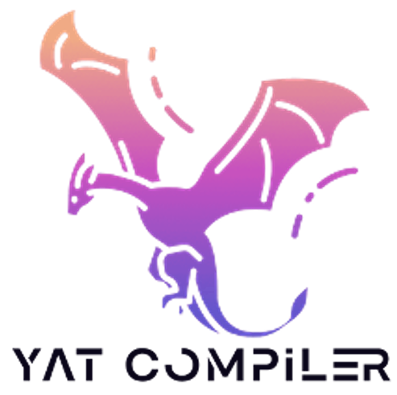

> About
Hi there! I'm Xianwei, now an Associate Professor (2020 - ) in School of Computer Science & Engineering and
National Supercomputer Center in Guangzhou/NSCC-GZ at Sun Yat-sen University,
researching on computer architecture and system towards high-performance and intelligent computing.
During 2017-2020, I worked in AMD Inc. (Research & RTG) on architecture and software designs for compute-optimized GPUs.
Previously, I completed my Ph.D. (2017) in the Computer Science Department at University of Pittsburgh, and
obtained Bachelor's (2011) degree on Software Engineering from Northwestern Polytechnical University.
More info can be found in LinkedIn.
02/2025: Two papers got accepted in DAC'2025. Congrats to Xuanteng and Kan!
01/2025: One paper got accepted in WWW'2025. Congrats to Yuhao!
09/2024: One invited talk was given in Huawei Connect 2024!
09/2024: Six new ARCSYSUers joined, welcome on board!
08/2024: One NSFC research grant was awarded!
07/2024: Two CCF research funds were awarded!
07/2024: One CCEC teaching prize was received. Check out Yat Compiler!
> Research
Topics: GPU, Compiling, Memory System, HPC, Intelligent Computing, Simulation/Modeling/Profiling
Grants: National Key R&D Program, NSFC Program, CCF-Tencent®/Huawei®/Phytium® Funds
My research interests lie broadly in hardware and software co-designs to improve the performance, efficiency and easiness of computing systems.
A particular emphasis is on GPU/heterogeneous computing and memory system design through architecture/compiler/runtime/container around the critical aspects of latency, bandwidth, portability and energy, etc.
I currently lead the arcSYSu (ARChitecture and SYStem Upscaling @ SYSU) research team,
which is proudly part of the NSCC-GZ Interdisciplinary Research Center, led by
Prof. Yutong Lu
and Prof. Nong Xiao.
In arcSYSu, I fortunately work with a group of wonderful graduate and undergraduate researchers/interns on computing systems.
[⭐️ Hiring!] Welcome to join us! [详见 FAQs]

[people @ arcSYSu, refining computing system uses] (#: co-advise)
| 2024 | Hongxin Xu | Tengyang Zheng# | Gaojin Sun | Lu Wu |
| Jingyi He | Bingjie Liu | |||
| 2023 | Mengyue Xi | Han Huang# | Wenyuan Liang | Hengzhong Liang |
| Wenxuan Pan | Aoyuan Sun | Zhongchun Zheng | ||
| 2022/21 | Xuanteng Huang[phd]# | Zejia Lin[phd] | Tianyu Guo[phd] | Yuhao Gu[phd]# |
| Tianyi Zhang | Zhaowen Shan | Chun-yu Chen | Kan Wu[phd]# | |
| Ug/RA | Guanyi Chen | Xianjie Chen | Junru Chen | Yunhao Han |
| Xin Huang | Yibin Luo | Zheng Zhou | Haoquan Chen | |
| Yipeng Ouyang | ||||
| Alum. | Tianao Ge (ms22, phd@Hkust-gz) | Zewei Mo (ms22, Intel->phd@upitt) | ||
| Yue Weng (ms23, Nvidia)# | Yinchuan Guo (ms24, Huawei) | Lianghong Huang (ms24, MetaX) | ||
> Publications
[ see full publication list ]
[  ,
,
 ,
,
 ]
]
§ [DAC'25]. X. Huang, J. Du, N. Xiao and X. Zhang, PaSK: Cold Start Mitigation for Inference with Proactive and Selective Kernel Loading on GPUs
§ [DAC'25]. K. Wu, Z. Lin, M. Xi, Z.. Zheng, W. Pan, X. Zhang and Y. Lu, GoPTX: Fine-grained GPU Kernel Fusion by PTX-level Instruction Flow Weaving
§ [WWW'25]. Y. Gu, C. Chen, J. Du, X. Zhang and X. Zhang, ORFA: Exploring WebAssembly as a Turing Complete Query
Language for Web APIs
§ [DAC'24]. T. Guo, X. Huang, K. Wu, X. Zhang and N. Xiao, SMILE: LLC-based Shared Memory Expansion to Improve GPU Thread Level Parallelism
§ [LCTES'24]. Z. Lin, A. Sun, X. Zhang and Y. Lu, MixPert: Optimizing Mixed-precision Floating-point Emulation on GPU Integer Tensor Cores
§ [ICCD'23]. Z. Lin, Z. Mo, X. Huang, X. Zhang and Y. Lu, KeSCo: Compiler-based Kernel Scheduling for Multi-task GPU Applications
§ [LCTES'22]. T. Ge, Z. Mo, K. Wu, X. Zhang and Y. Lu, RollBin: Reducing Code-size via Loop Rerolling at Binary Level
> Teaching

Yat Compilation Course
- Undergraduate
§ DCS290/292 - Compilation Principle & Construction,
[25s, 24s, 23s, 22s, 21s]
( Yat-Compiler).
§ DCS3013 - Computer Architecture, [22f].
- Graduate
§ DCS5637/6207 - Advanced Computer Architecture, [24f, 23f, 22f, 21f].
> Miscellaneous
- Honors/Awards
§ [2024] CCF-CCEC Teaching Prize
§ [2022] CAST Sci&Tech Young Talent Program
§ [2019] AMD® Spotlight Award
§ [2016] Andrew Mellon Fellowship
§ [2013] Best Paper Award of ISLPED
- Services
§ [TPC] CCGrid'2025, IJCNN'2025, NAS'2024, NPC'2024, HiPC'2024/2023/2022, ICPADS'2022
§ [ERC] MICRO (IEEE/ACM Int'l Sym. on Microarchitecture) - 2020
§ [TPC] ICCD (IEEE Int’l Conf. on Computer Design) - 2020, 2019, 2018